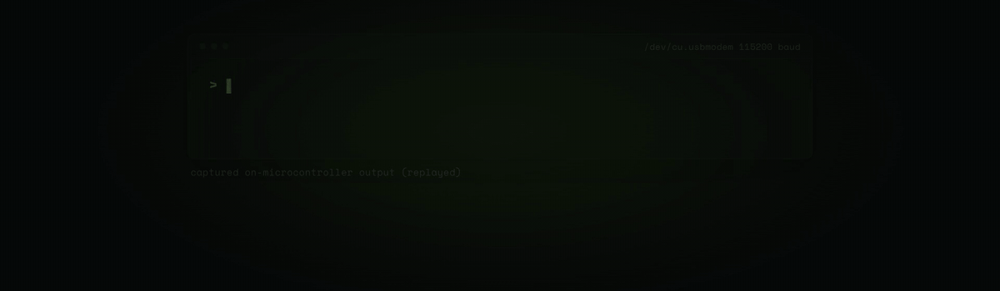

We called a 260K-parameter model on a $5 chip "the floor." A builder just moved it 111x higher.
Two weeks ago we called an ESP32-S3 running a 260,000-parameter model "the floor" of on-device AI — the smallest, least capable end of the spectrum, included in a roundup mostly to show how low you could go. A builder named slvDev just ran a 28.9-million-parameter model on the same class of chip, posted July 23–24. That's 111 times more parameters, on hardware that costs about $3 more.
Edge in the Wild is our occasional spotlight on real people running real models on real hardware — sourced, credited, no invented specs. This one: esp32-ai by slvDev (Slava S.), MIT-licensed, built and documented in his own repo and X threads. Source: github.com/slvDev/esp32-ai · announcement thread · technical explainer thread.
The constraint: 512KB of RAM for a 28.9M-parameter model
An ESP32-S3 has 512KB of SRAM, 8MB of PSRAM, and 16MB of flash storage. A 28.9M-parameter model, stored naively, doesn't fit in any single one of those budgets comfortably — most of the weight count has to live somewhere, and RAM is the scarcest resource on the board by a wide margin.
slvDev's fix: don't put most of the weights in RAM at all. 25 of the model's 28.9 million parameters live in a flash-resident lookup table, using Per-Layer Embeddings (PLE) — the same technique Google introduced for Gemma 3n and carried into Gemma 4, where large embedding tables are streamed from storage per-layer instead of held fully in memory. On a phone, PLE is a memory-efficiency nicety. On a chip with 512KB of SRAM, it's the only way the model runs at all: the repo's own numbers put flash reads at roughly 450 bytes per generated token, small enough that flash bandwidth — not RAM capacity — becomes the binding constraint instead.
The numbers
| Spec | Value |
|---|---|
| Chip | ESP32-S3 (~$8 boards) |
| RAM | 512KB SRAM + 8MB PSRAM |
| Flash | 16MB total; model occupies 14.9MB |
| Parameters | 28.9M total (25M in flash-resident PLE table) |
| Quantization | 4-bit |
| Training data | TinyStories |
| Throughput | ~9.5 tok/s end-to-end (~9.7 tok/s pure compute) |
| Flash bandwidth used | ~450 bytes read per generated token |
| Architecture lineage | Built on Andrej Karpathy's llama2.c |
| License | MIT |
Source: slvDev, esp32-ai/RESULTS.md and the technical explainer thread linked above.

The honest trade-off: bigger is slower
slvDev's own technical thread draws the comparison directly to Dave Bennett's 2024 esp32-llm project — the same one we featured on July 13 as "the floor" — which ran its much smaller 260K-parameter model at roughly 19 tokens per second on the same chip family. esp32-ai's 111x larger model runs at about half that speed, ~9.5 tok/s. That's not a flaw the project hides — it's the expected shape of the trade: more parameters generally means more capable output and slower generation on fixed hardware, and a builder-honest writeup says so plainly instead of only publishing the flattering number.
Why this floor matters for privateSLM's ceiling
Nobody is going to run their daily AI chat on an $8 microcontroller — that's not the point of a project like this. The point is what it proves about the bottom of the stack: if a 512KB-RAM chip can hold a meaningful chunk of a language model's weights in flash and generate readable text with zero network connection, zero server, and zero account, then the "fully private, fully offline" bet privateSLM makes on a phone with gigabytes of RAM and dedicated AI silicon was never the hard part. The hard part esp32-ai solves — fitting a model into a device that has almost nothing to spare — is a problem privateSLM's hardware doesn't have. What's left is making good use of the room you do have, which is a design choice, not a hardware constraint.
Source / credit: Project and all technical details by slvDev (Slava S.), MIT-licensed. Repo: github.com/slvDev/esp32-ai. Original announcement and technical threads on X, linked above. We did not modify or republish any of the builder's material beyond the single demo GIF embedded above, credited to the same repo.
Discuss this on the forum → — know a builder pushing the floor even lower, or a phone-scale project we should be tracking instead?